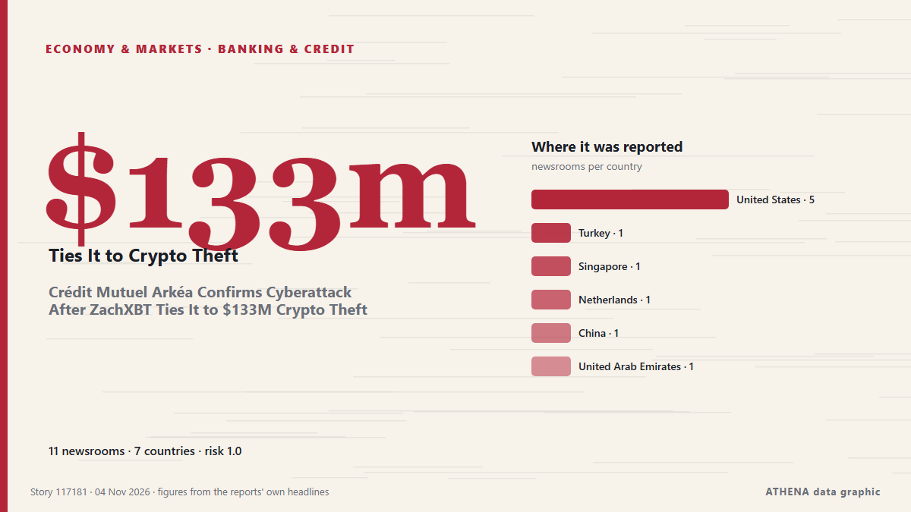

Τράπεζες & πίστη
ΧορηγούμενοΠαρουσιάζεται από  Cybernetics and Artificial Intelligence Lab Welcome to the Cybernetics and Artificial Intelligence Laboratory, established at the Department of Business Administration of the National and Kapodistrian University of Athens. The lab is headed by Professor Dimitrios Thomakos. The lab aims to do research that can be published in top venues. Our research uses tools and methods of Artificial Intelligence, and lies in the following areas: - Forecasting - Decision making - Cyber security - Finance We are always looking forward to collaborating with exceptional students!
Cybernetics and Artificial Intelligence Lab Welcome to the Cybernetics and Artificial Intelligence Laboratory, established at the Department of Business Administration of the National and Kapodistrian University of Athens. The lab is headed by Professor Dimitrios Thomakos. The lab aims to do research that can be published in top venues. Our research uses tools and methods of Artificial Intelligence, and lies in the following areas: - Forecasting - Decision making - Cyber security - Finance We are always looking forward to collaborating with exceptional students!
| 23 Οκτ | 0 |
|---|---|
| 24 Οκτ | 0 |
| 25 Οκτ | 0 |
| 26 Οκτ | 0 |
| 27 Οκτ | 0 |
| 28 Οκτ | 0 |
| 29 Οκτ | 0 |
| 30 Οκτ | 1 |
| 31 Οκτ | 3 |
| 1 Νοε | 3 |
| 2 Νοε | 4 |
| 3 Νοε | 9 |
| 4 Νοε | 4 |
| 5 Νοε | 0 |
Οι τίτλοι των ειδήσεων παρουσιάζονται στα αγγλικά, όπως δημοσιεύτηκαν.

Crédit Mutuel Arkéa Confirms Cyberattack After ZachXBT Ties It to $133M Crypto Theft
The French bank said the attack allowed "fraudulent operations" but did not mention crypto, and is still assessing the amounts. από Decrypt
World Bank: How corruption is holding back Kenya’s economic potential
Corruption is costing Kenya more than public money lost through questionable deals. από People Daily
Classy Kohli leads India to crushing win over New Zealand
AUCKLAND: Virat Kohli hit a brilliant 74 to lead India to a five-wicket win over New Zealand in their first one-day international at Auckland’s Eden Park on Wednesday. από New Straits Times
Israel orders seizure of over 26,000m² of Palestinian land in occupied West Bank
The military order covers land in three villages northwest of Ramallah for a route intended to connect more illegal Israeli settlements, a Palestinian commission says. από TRT World
Belgrade Commercial Court Opens Bankruptcy Proceedings Against Alta Banka
The Commercial Court in Belgrade opened bankruptcy proceedings against Alta Bank, appointing the Deposit Insurance Agency as the bankruptcy administra. από N1 Serbia (English)
Consortium led by Boehly preparing securities swap deal for Lukoil assets — Reuters
According to the sources, an unnamed bank acting on behalf of the consortium has purchased frozen Lukoil securities from Western investors to subsequently exchange them for the company’s foreign… από TASS (English)
Tinubu’s reforms favour rich, worsen poverty — Atedo Peterside
Atedo Peterside, founder of Stanbic IBTC Bank Plc and Anap Foundation, has said President Bola Tinubu’s economic reforms have benefited wealthy Nigerians while worsening the living conditions of… από Vanguard
'2 Planes, 6 Plots': Probe Agency's Rs 510-Crore Action On Anil Ambani Group
Listing the seized assets, the agency said in a statement that it has attached 2 chartered aircraft, 6 land parcels, and one office premises in Maharashtra. από NDTV
New Zealand's central bank registers Revolut as country's 27th bank
Regulatory approval means Revolut Bank NZ will be the nation's first digital bank. από BusinessDesk
Owner of Serbia's Delicenced ALTA Banka Gets Arrested
The Executive Board of the National Bank of Serbia has officially revoked the operating licence of Alta Banka a.d. από N1 Serbia (English)
FG introduces USSD code for loans covering food, solar, others
The Federal Government has launched a new USSD-based credit service, SPARK, designed to help Nigerians access loans and build formal credit histories using basic mobile phones. από Vanguard
Cracks In Turkey-Azerbaijan Ties: Israel And Aliyev’s Absence
Behind the specific disagreements, a broader geopolitical issue may be at play, as Ankara and Baku diverge on Iran, Israel and Armenia. από to vima
Jordan's king says 'no security or stability' in region without Palestinian homelan
Jordan’s King Abdullah II on Monday said there would be no security in the Middle East region until the Palestinians’ right to a homeland is fulfilled. από Hespress English
Egypt signs $1bn World Bank financing agreement under second phase of reform programme
Egypt has signed a $1bn financing agreement with the World Bank under the second phase of its Development Policy Financing (DPF) programme to support economic reforms, strengthen resilience to… από Daily News Egypt
Nigeria: Adesina, Sanusi, Otti, Others to Lead African Prosperity Talks in Abuja
[This Day] Abuja -- Former President of the African Development Bank (AfDB), Dr Akinwumi Adesina; Emir of Kano, Muhammadu Sanusi II; and Abia State Governor, Alex Otti, are among prominent African… από AllAfrica
Israeli forces fire tear gas at Palestinian students, teachers in West Bank as occupiers block roads
Israeli army, occupiers carry out 3,133 attacks last month in 52.8% increase from previous month, commission says. από Express Tribune
African lenders formally establish $5 billion energy bank
The African Export-Import Bank and the African Petroleum Producers' Organisation have formally established the Africa Energy Bank, according to a statement from Afreximbank on Saturday. από MyJoyOnline